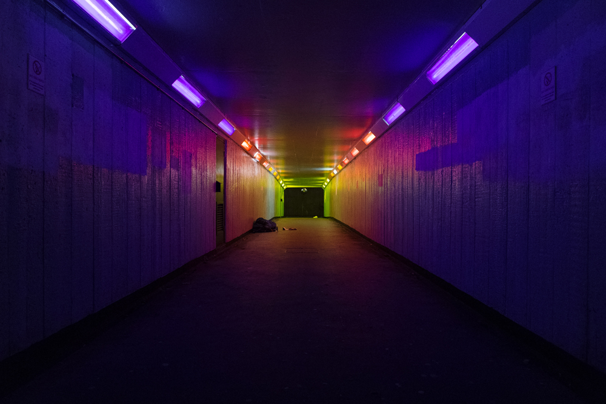
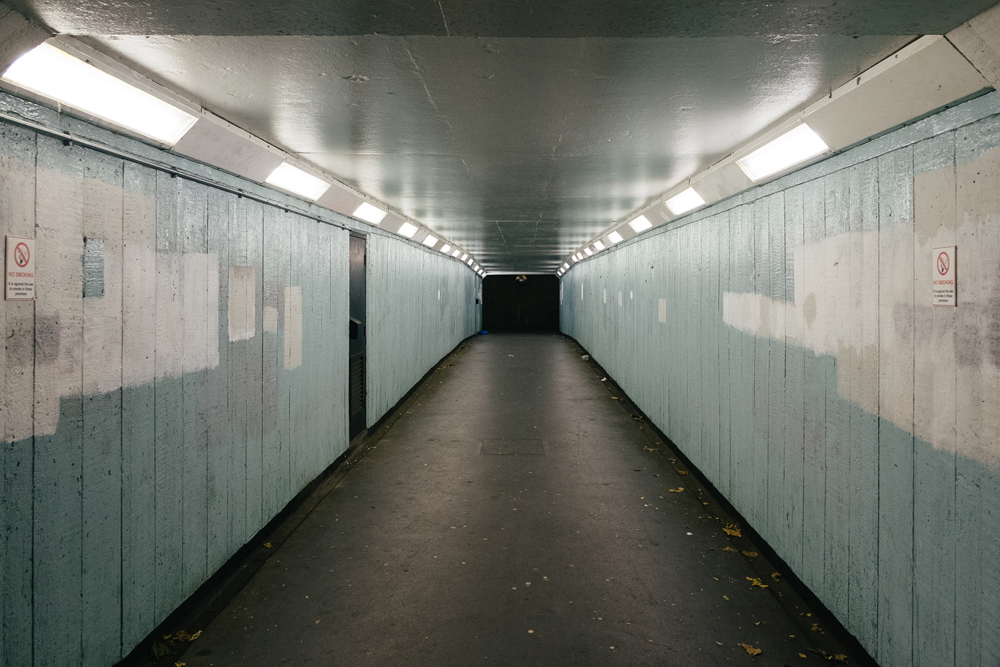
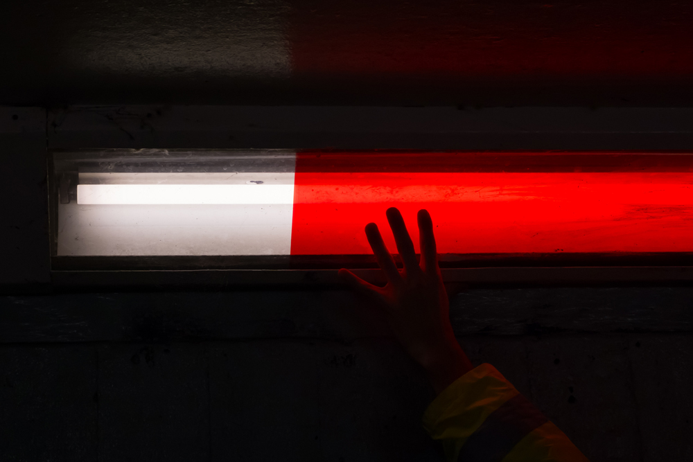
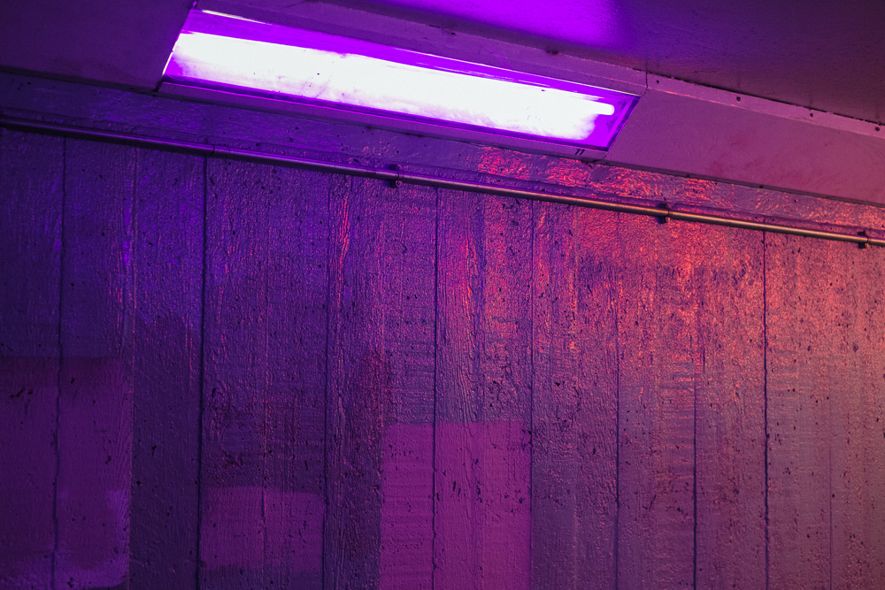
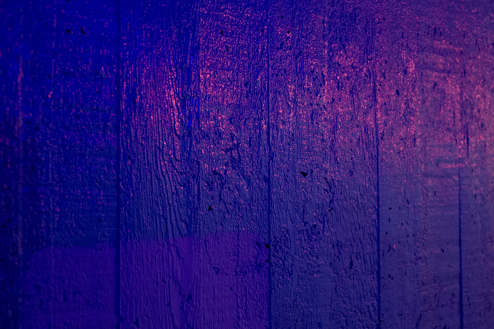
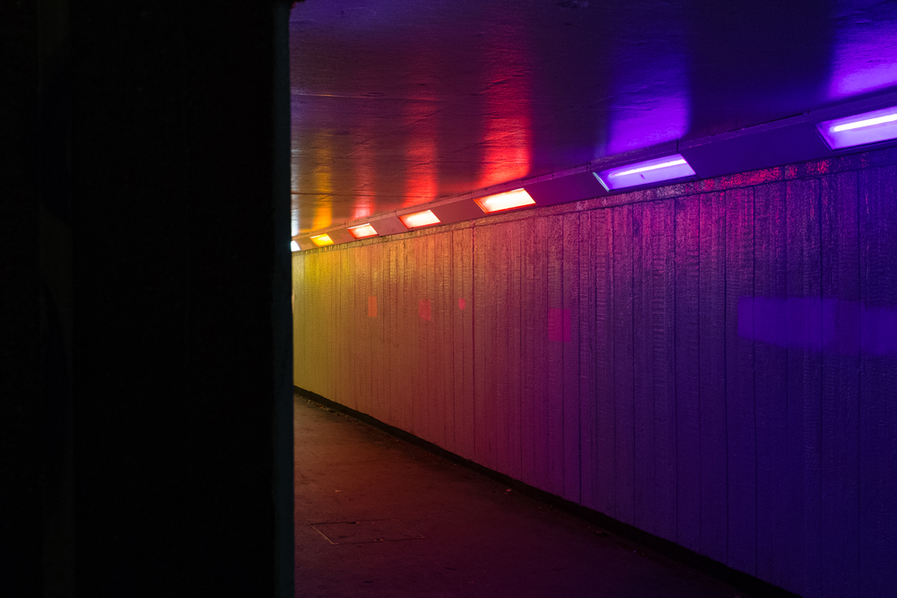

Home Improvements
Twenty-three coloured light gels, gradating from deep purple to yellow. Brightening up my (and hopefully others) journey through an otherwise very grey subway. The beginning of a personal investigation in gaining agency over your local environment through simple and quick interventions.
Old Kent Road, London, 2017
Photography by Peter Clarkson
Thank you to some anonymous friends.





